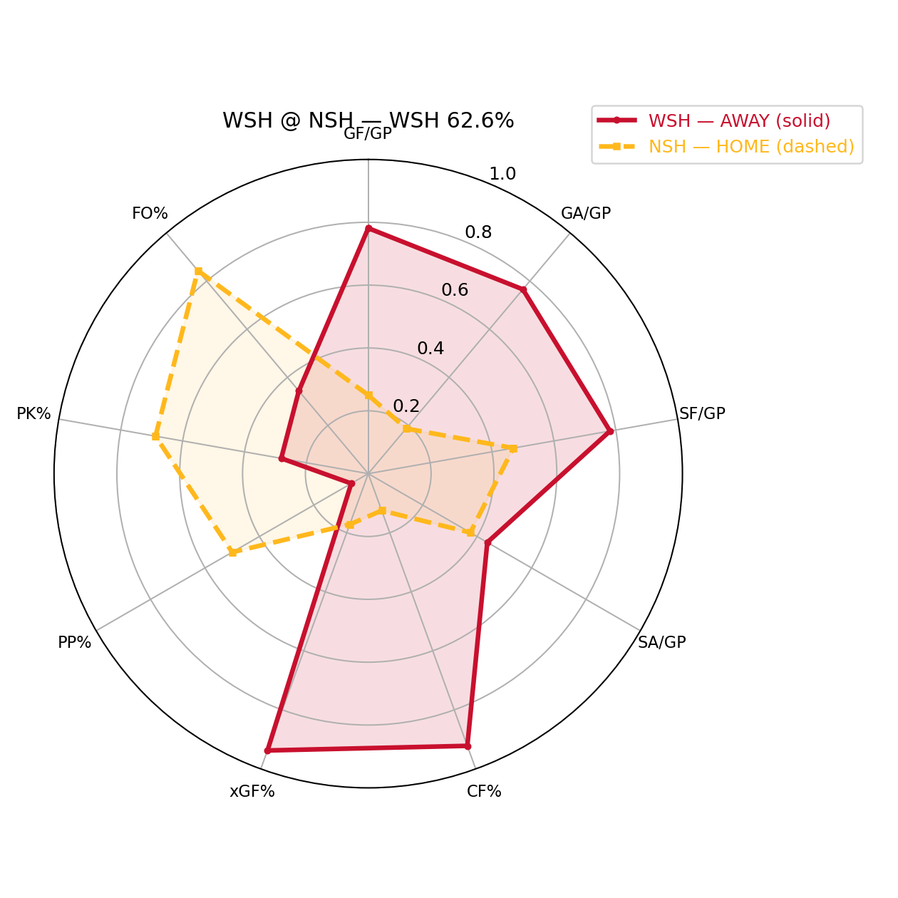
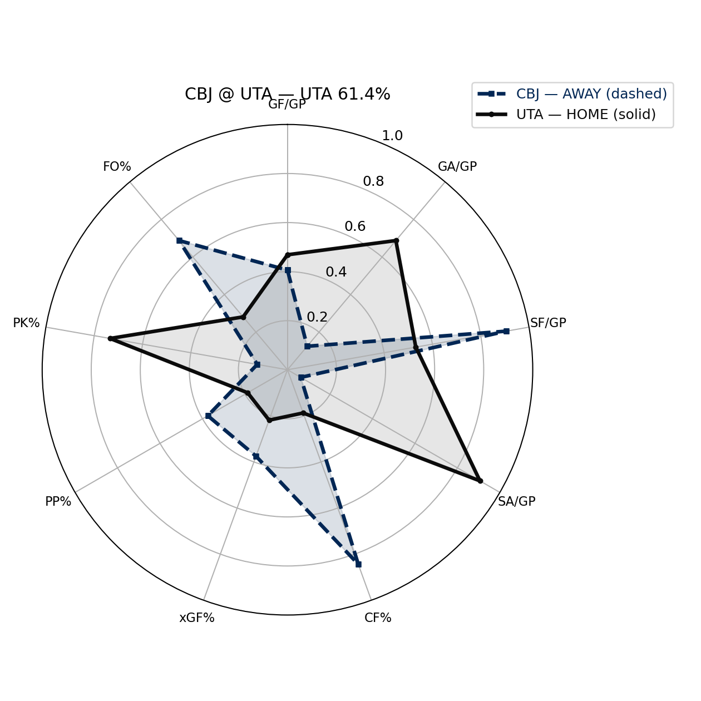
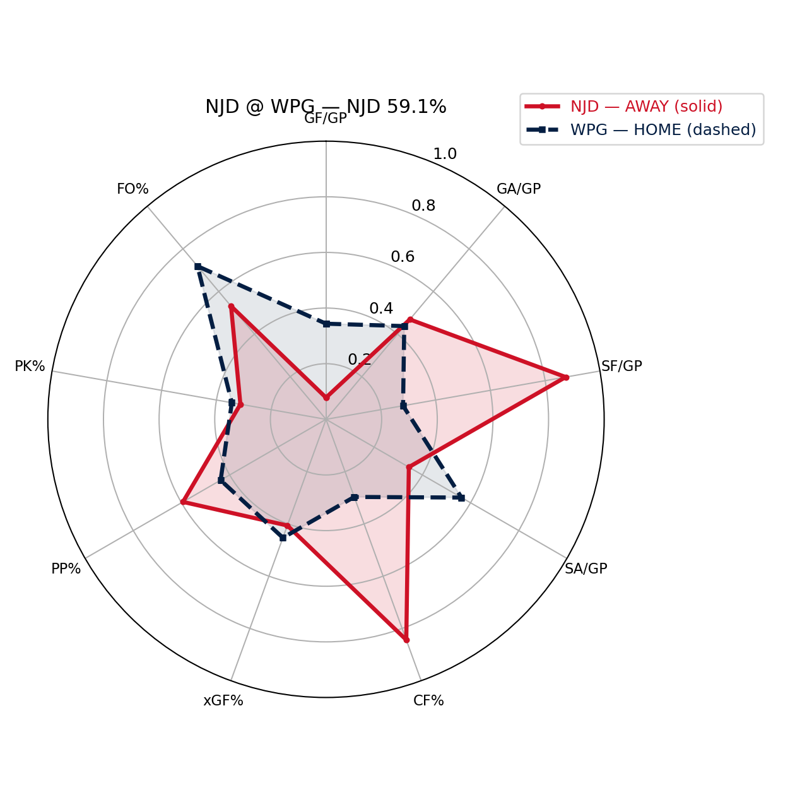
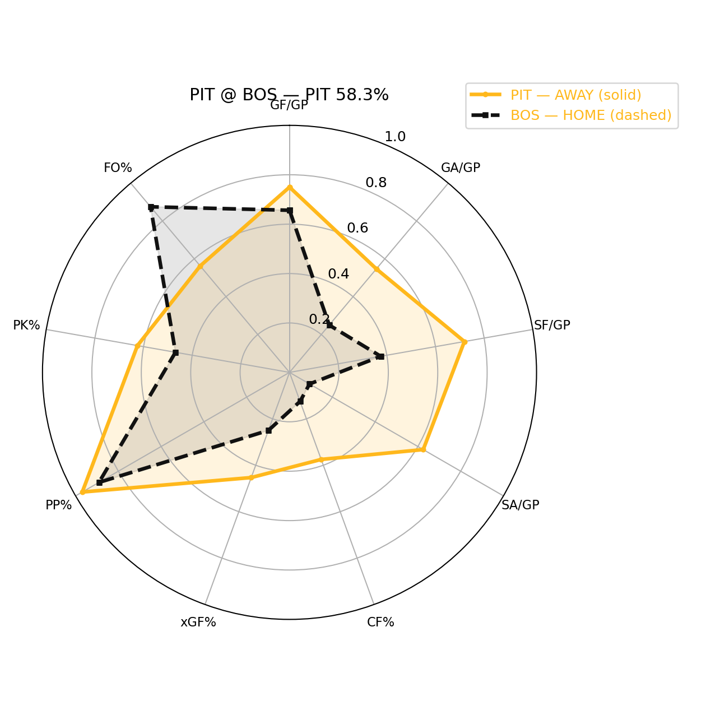
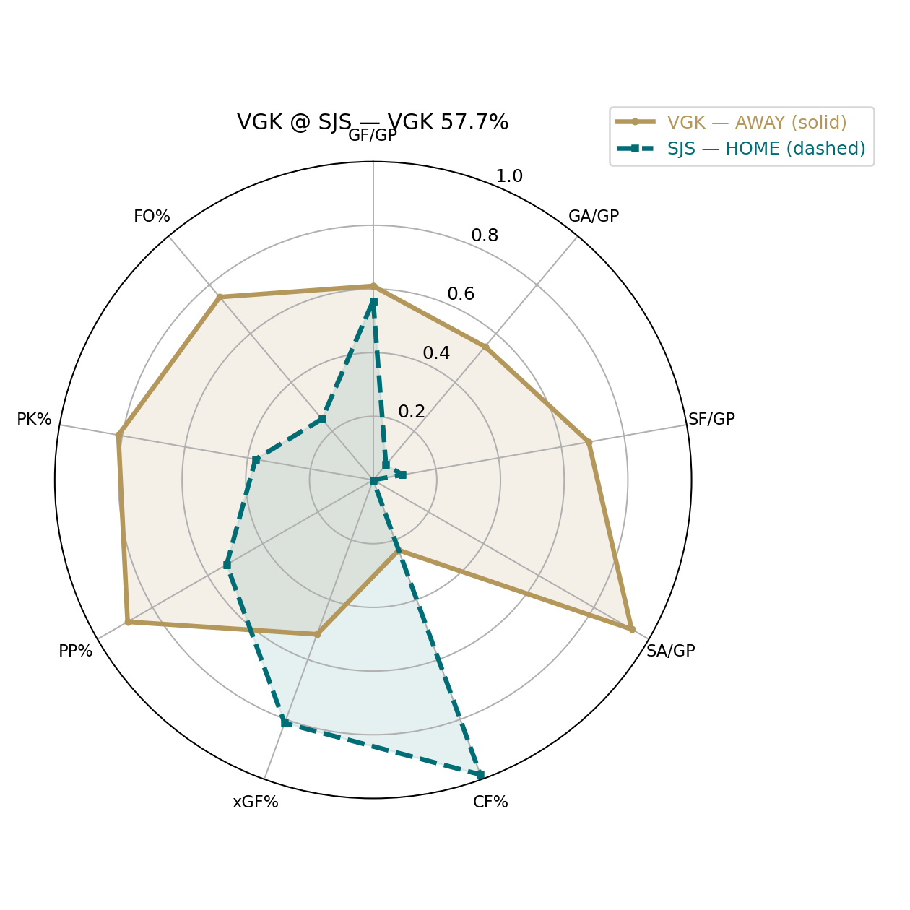

NHL Picks Report — 2026-01-11 (Toronto-local)
Metrics used: ALL available numeric columns (9)
LOGIT_K: 3.45 | HOME_ICE_LOGIT_BONUS=0.1
SHRINK_ALPHA: 0.33 (+coverage-weighted=True) toward 0.5
PROB_CAP: [0.08, 0.92] | EDGE_WINSOR=±0.25 | TEMP=1.28
MATCHUP_LAYER: ON | LOGIT_CAP=±0.22 | WEIGHT=0.80 | SPECS=7
STANDINGS_LAYER: ON | LOGIT_CAP=±0.18 | WEIGHT=0.90 | MIN_GP=10
SCHEDULE_LAYER: ON | LOGIT_CAP=±0.20 | WEIGHT=0.85 | mode=game_fatigue | diffs=rest_diff/travel_diff/cong_diff
WSH @ NSH
PICK: WSH 62.6% • Medium • implied ML -167
2026-01-12T00:00:00Z
z_total=-0.66 | z_base=-0.34 | z_matchup=-0.22 | z_standings=+0.10 | z_schedule=-0.20
Results vs model: points%=0.578 | model=0.590 | Δ=-0.012 | (-4 spots under)
Results vs model: points%=0.500 | model=0.401 | Δ=+0.099 | (+2 spots over)
Why (schedule): Schedule/Fatigue: rest_diff=+1d | travel_diff=+641km | cong_diff=-3 | fatigue_diff=-1.36 | z=+0.200
Why (context): Because it shows broad two-way dominance, and controls play and shot/possession, and suppresses shots and goals effectively, and creates higher-quality chances. Matchup angle: it has an edge in chance-quality share; it has an edge in possession/territory profile; it has an edge in finishing/scoring vs their goals-against profile. Results note: WSH has lagged expectation in the standings relative to NSH (profile still likes it here).

CBJ @ UTA
PICK: UTA 61.4% • Medium • implied ML -159
2026-01-12T00:00:00Z
z_total=+0.60 | z_base=+0.18 | z_matchup=+0.22 | z_standings=+0.00 | z_schedule=+0.20
Results vs model: points%=0.489 | model=0.434 | Δ=+0.055 | (-6 spots under)
Results vs model: points%=0.522 | model=0.467 | Δ=+0.055 | (-2 spots under)
Why (schedule): Schedule/Fatigue: rest_diff=+1d | travel_diff=-596km | cong_diff=-3 | fatigue_diff=-2.60 | z=+0.200
Why (context): Because it suppresses shots and goals effectively, and has a meaningful special-teams edge, and has the edge in finishing and goaltending. Matchup angle: it has an edge in penalty kill vs their power play; it has an edge in shot volume vs their shot suppression; it has an edge in finishing/scoring vs their goals-against profile.

NJD @ WPG
PICK: NJD 59.1% • Medium • implied ML -145
2026-01-11T19:00:00Z
z_total=-0.47 | z_base=-0.05 | z_matchup=-0.22 | z_standings=-0.03 | z_schedule=-0.18
Results vs model: points%=0.523 | model=0.495 | Δ=+0.028 | (-5 spots under)
Results vs model: points%=0.430 | model=0.431 | Δ=-0.000 | (-7 spots under)
Why (schedule): Schedule/Fatigue: rest_diff=+1d | travel_diff=+1700km | cong_diff=-2 | fatigue_diff=+0.20 | z=+0.178
Why (context): Because it controls play and shot/possession, and has a meaningful special-teams edge, and suppresses shots and goals effectively. Matchup angle: it has an edge in possession/territory profile; it has an edge in power play vs their penalty kill; it has an edge in shot volume vs their shot suppression.

PIT @ BOS
PICK: PIT 58.3% • Medium • implied ML -140
2026-01-11T22:00:00Z
z_total=-0.43 | z_base=-0.32 | z_matchup=-0.22 | z_standings=+0.13 | z_schedule=-0.02
Results vs model: points%=0.593 | model=0.625 | Δ=-0.032 | (-6 spots under)
Results vs model: points%=0.556 | model=0.443 | Δ=+0.113 | (+5 spots over)
Why (schedule): Schedule/Fatigue: rest_diff=+0d | travel_diff=+774km | cong_diff=-1 | fatigue_diff=+0.27 | z=+0.019
Why (context): Because it shows broad two-way dominance, and controls play and shot/possession, and suppresses shots and goals effectively, and has a meaningful special-teams edge. Matchup angle: it has an edge in power play vs their penalty kill; it has an edge in finishing/scoring vs their goals-against profile; it has an edge in shot volume vs their shot suppression. Results note: PIT has lagged expectation in the standings relative to BOS (profile still likes it here).

VGK @ SJS
PICK: VGK 57.7% • Medium • implied ML -136
2026-01-12T01:00:00Z
z_total=-0.40 | z_base=-0.49 | z_matchup=-0.22 | z_standings=+0.18 | z_schedule=+0.14
Results vs model: points%=0.605 | model=0.665 | Δ=-0.060 | (-4 spots under)
Results vs model: points%=0.557 | model=0.408 | Δ=+0.149 | (+9 spots over)
Why (schedule): Schedule/Fatigue: rest_diff=+0d | travel_diff=+614km | cong_diff=+1 | fatigue_diff=+1.11 | z=-0.137
Why (context): Because it shows broad two-way dominance, and controls play and shot/possession, and suppresses shots and goals effectively, and has a meaningful special-teams edge. Matchup angle: it has an edge in power play vs their penalty kill; it has an edge in finishing/scoring vs their goals-against profile; it has an edge in shot volume vs their shot suppression. Results note: VGK has lagged expectation in the standings relative to SJS (profile still likes it here).
